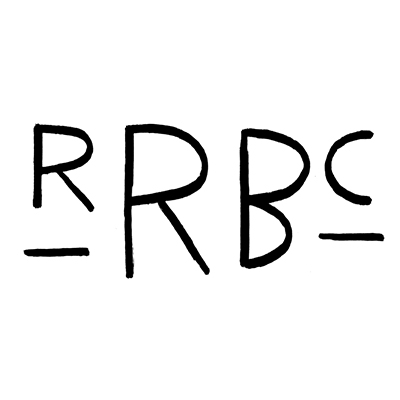
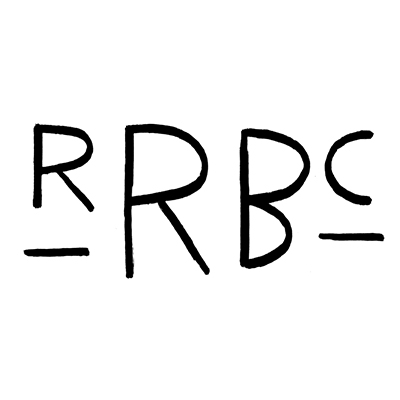


 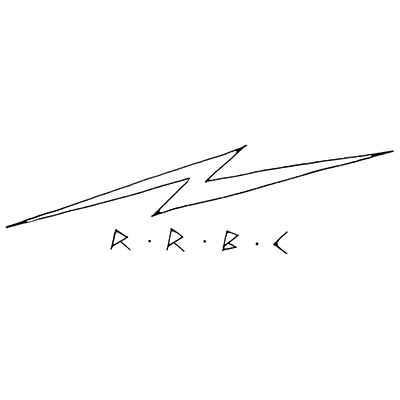
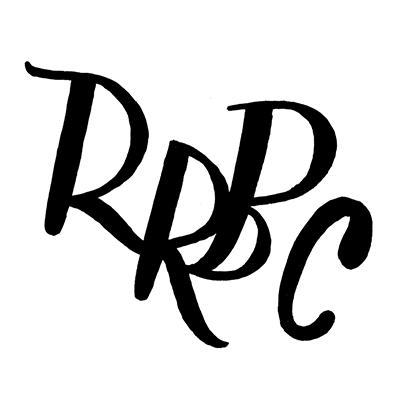
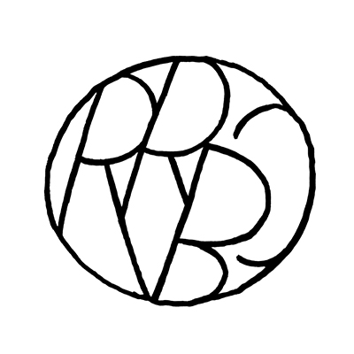
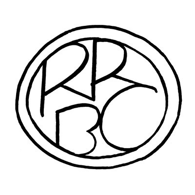
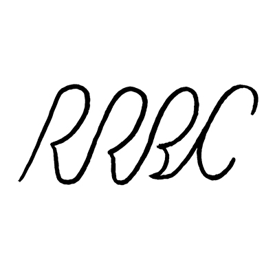
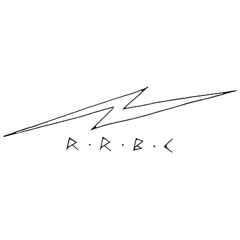
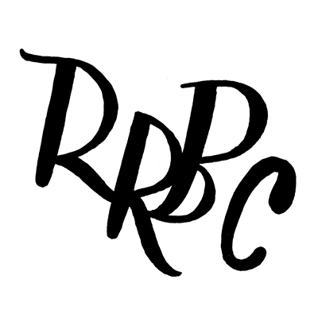
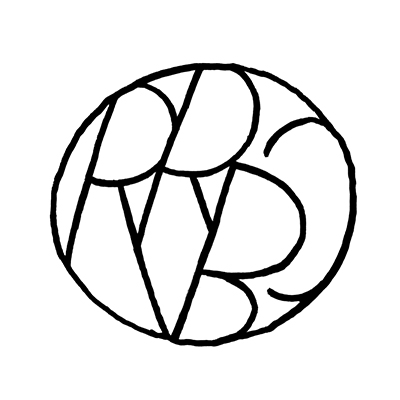
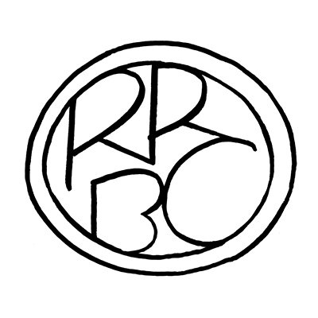
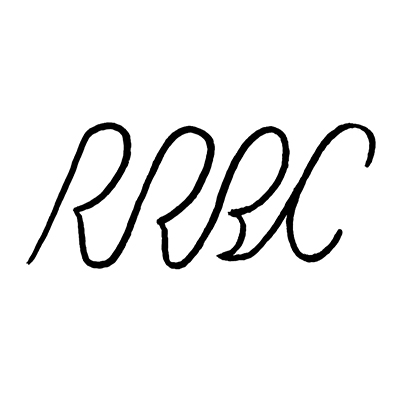
 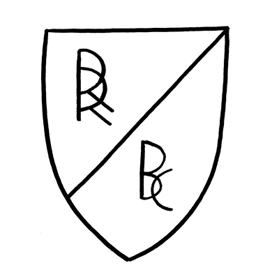
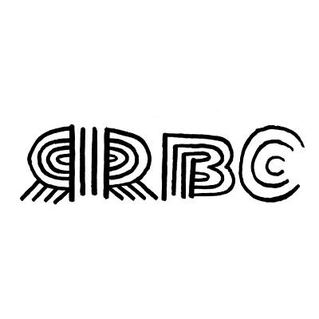
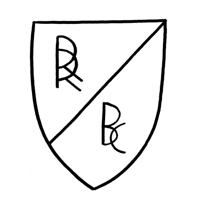
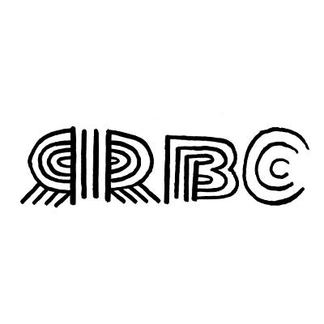


 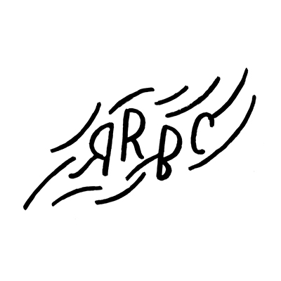
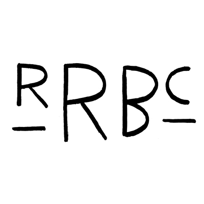
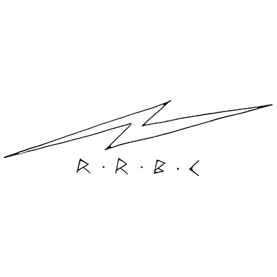
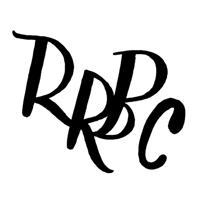
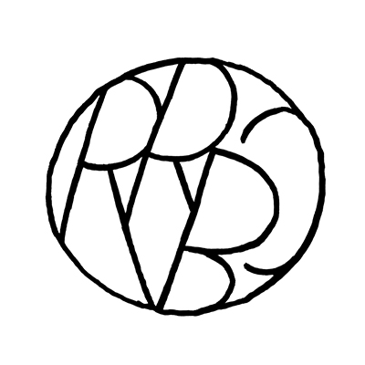
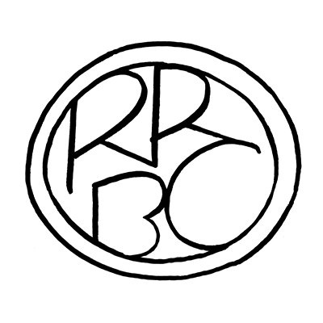
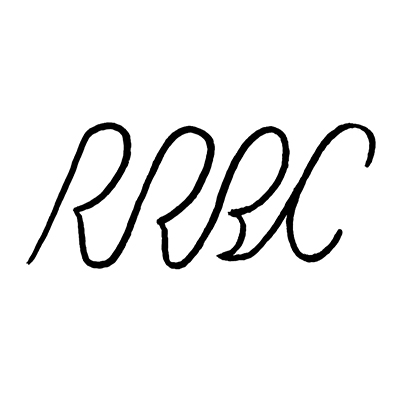
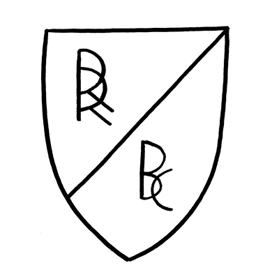
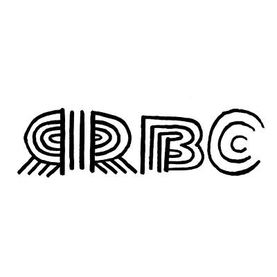
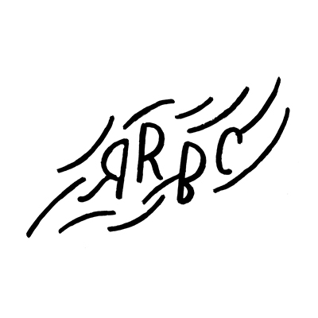
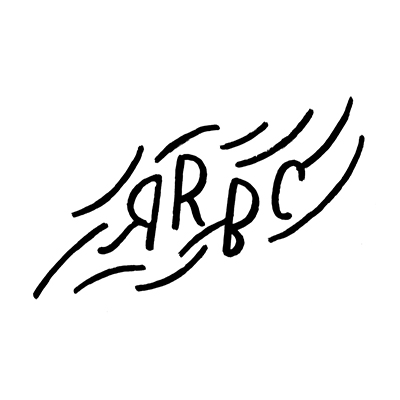
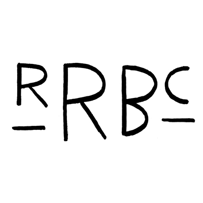
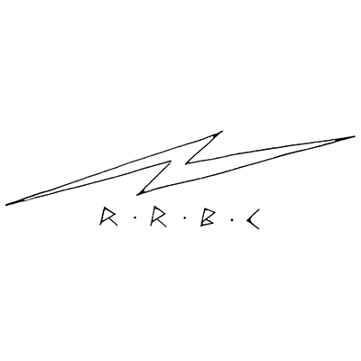
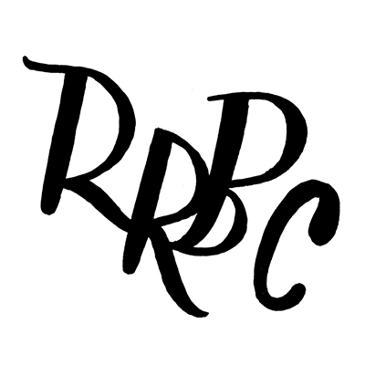
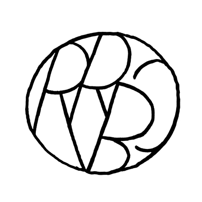
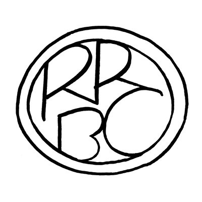
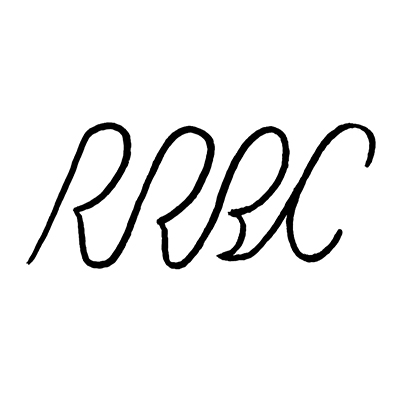
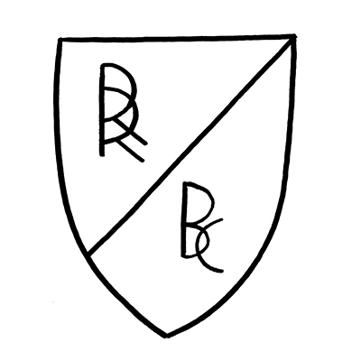
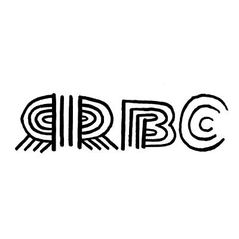
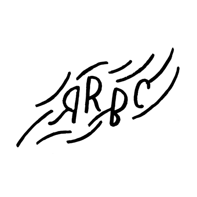
It begins with an optional group run, 2–3 miles or whatever the group feels like. Maybe we run by some historic beer-related buildings in the hood, maybe we don't.
On our way back, we stop by Hops & Hocks to pick up a mix-and-match 6-pack. (Note that only those on the run get to choose the beer.)
We come back to the office and pour a beer flight for each person. Anyone not on the run is encouraged to join.
Each beer is tasted as a group. After each round, anyone can choose that beer to describe. Each person can only choose one beer. Multiple people can choose a single beer.
When someone chooses a beer to describe, they are given 30 seconds to comment on their chosen beer in the manner of a sommelier (or however they like). Demonstartions can be provided.
When all rounds are completed, we all then vote on the best description. Descriptions shall be judged on accuracy, imagination, and insight.